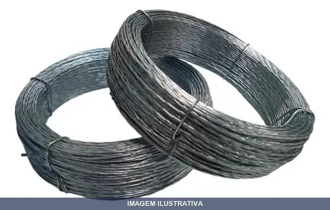
ARAME TORCIDO PARA LACRE GEMIX
Indicação de Uso: Arame torcido para lacre de documentos, embalagens e objetos que necessitam de fechamento seguro. Material e Resistência: Arame torcido, apropriado para aplicações de lacre. Vantagem Prática: Permite fixação e vedação prática de lacres em diversos tipos de embalagem e documentação.
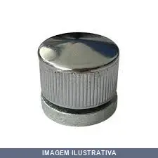
BOTAO FRANCES PARA ESPELHO CROMADO PLASTICO
Indicação de Uso: Fixação de espelhos na parede. Material e Resistência: Plástico ABS cromado com acabamento decorativo. Vantagem Prática: Instalação simples com bucha e parafuso, acompanha 4 unidades.
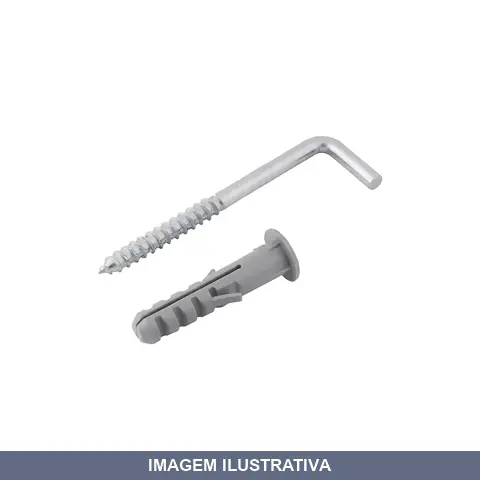
BUCHA COM ANEL +ESCAPULA SFOR
Bucha plástica com escápula (gancho) em zinco para fixação de parafusos. Indicação de Uso: fixação em alvenaria, concreto e materiais similares. Vantagem Prática: conjunto completo que facilita a instalação e oferece melhor distribuição de carga na superfície.
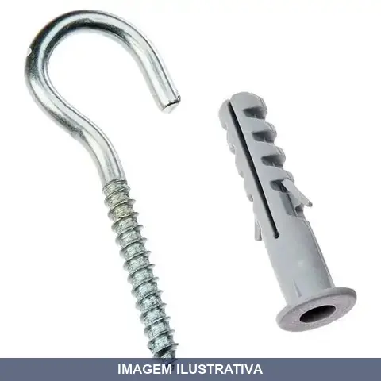
BUCHA COM ANEL +GANCHO SFOR
Indicação de Uso: Fixação de objetos em alvenaria, concreto e drywall. / Material e Resistência: Bucha de nylon com anel de retenção e gancho de aço zincado, resistente à corrosão. / Vantagem Prática: Combinação prática que dispensa o uso de parafusos e buchas separados.
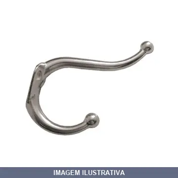
CABIDE CROMADO - DUPLO SILVANA
Indicação de Uso: Pendurar roupas, toalhas, bolsas, bonés e acessórios diversos. Material e Resistência: Aço carbono cromado, suporta até 15kg. Vantagem Prática: Dois ganchos para maior capacidade de organização. Instalação na parede com fixação segura.
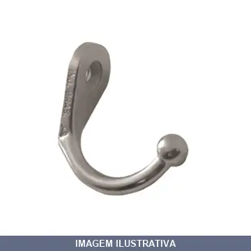
CABIDE CROMADO 63983 SIMPLES ALIANCA
Cabide cromado simples para fixação em parede. Indicado para pendurar roupas, toalhas e objetos leves em ambientes residenciais e comerciais. Material cromado oferece resistência à corrosão e facilita a limpeza. Instalação direta na parede com parafuso e bucha.
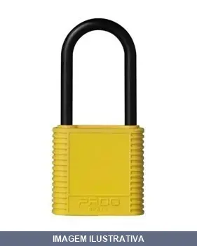
CADEADO AMARELO PADO
Cadeado 30mm com corpo em latão maciço revestido em capa plástica amarela e haste em aço cementado. Acompanha 2 chaves em latão. Indicado para malas, armários, cofres e demais aplicações de segurança.
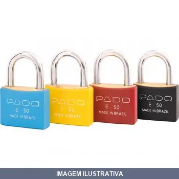
CADEADO AZUL PADO
Cadeado Pado em latão maciço com revestimento em capa plástica azul. Haste em aço cementado com dupla trava. Acompanha 2 chaves em latão. Conforme norma ABNT NBR 15271:2013. Indicado para trancar armários, malas, portões e objetos diversos.
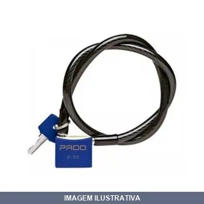
CADEADO BIKE .20CMX PADO
Cadeado de cabo de aço para bicicleta, indicado para segurança e proteção contra furtos de bicicletas e equipamentos. Cabo flexível, resistente à corrosão. Fechamento com chave, oferecendo praticidade e segurança portátil.
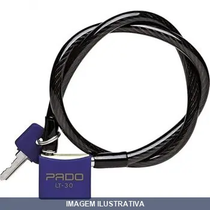
CADEADO BIKE .60CMX PADO
Indicação de Uso: Segurança de bicicletas e objetos diversos. / Material e Resistência: Corpo em latão maciço com revestimento plástico, cabo em aço flexível. / Acompanhamento: Inclui 2 chave.
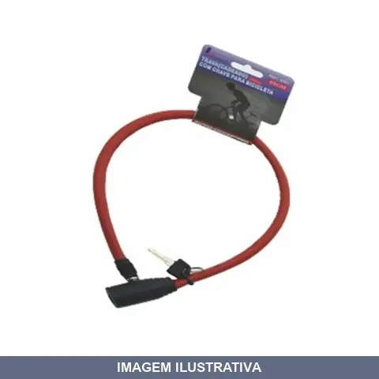
CADEADO BIKE LOTUS
Cadeado tipo cabo aço flexível revestido, indicado para segurança de bicicletas e outros equipamentos. Mecanismo de fechadura com chave. Apropriado para uso em ambientes externos e internos, oferecendo proteção contra furtos. Facilita o transporte e pode ser utilizado em diversos pontos de fixação.
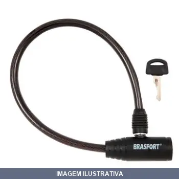
CADEADO BIKE SC BRASFORT
CADEADO BICICLETA BRASFORT COM CHAVE 08 X 40CM REF 7015
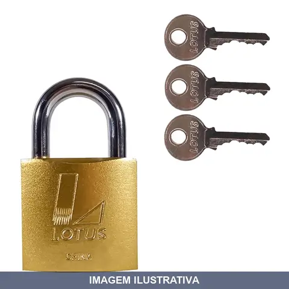
CADEADO CHAVES LOTUS
Indicação de Uso: Fechamento e segurança de portas, portões, cadeados, armários e outros acessos que necessitam proteção contra abertura não autorizada. Material e Resistência: Corpo em metal resistente, acompanhado de três chaves para operação. Vantagem Prática: Acesso múltiplo com três chaves incluídas, permitindo distribuição entre usuários autorizados.
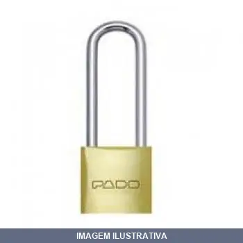
CADEADO HASTE LONGA PADO
CADEADO SM LT 30/50 MM HL Corpo em latão maciço, haste 50mm em aço; acompanha 2 chaves em latão
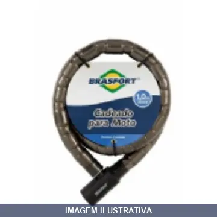
CADEADO MOTO SC BRASFORT 1.0M 7012
Indicação de Uso: Segurança de motocicletas e motos, ideal para imobilização em estacionamentos e ambientes externos. Material e Resistência: Construção em aço com corrente, resistente a intempéries e tentativas de furto. Vantagem Prática: Facilita transporte e instalação em diferentes pontos de fixação.
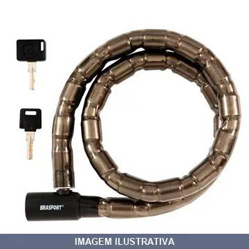
CADEADO MOTO SC BRASFORT 1.2M 7013
CADEADO PARA MOTO BRASFORT COM CHAVE 22 X 1,2 METROS REF:7013
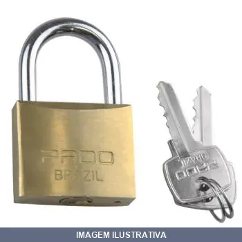
CADEADO PADO
Indicação de Uso: Fechamento e proteção de portões, cadeados, armários, malas e demais estruturas que necessitem de segurança contra furtos e acessos não autorizados. Material e Resistência: Construído em metal, oferece resistência adequada para uso geral em ambientes internos e externos. Vantagem Prática: Fechamento rápido e seguro, mantendo itens e espaços protegidos.
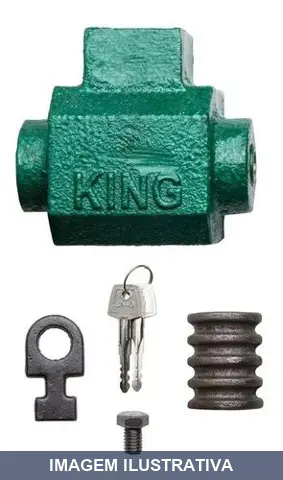
CADEADO PORTA AÇO TETRA ML KING MILANO
Indicação de Uso: Fechadura de segurança para portas e portais de aço. Material e Resistência: Carcaça, cone e baioneta em aço forjado; cilindro em latão. Acompanha duas chaves tetra. Vantagem Prática: Acionamento externo com abertura automática do cilindro ao girar a chave, sem necessidade de força adicional para trancá-lo.
CADEADO SEGREDO IGUAL PADO 30MM 04
Indicação de Uso: Portões, armários, caixas e equipamentos que exigem fechamento com chave única. Material e Resistência: Corpo em aço com acabamento anticorrosivo. Haste em aço resistente. Vantagem Prática: Sistema de segredo igual que permite usar uma única chave para múltiplos cadeados, facilitando controle de acesso.

CADEADO SEGREDO IGUAL PADO 40MM 2
Indicação de Uso: Portões, armários, caixas e equipamentos que exigem fechamento com chave única. Material e Resistência: Corpo em aço com acabamento anticorrosivo. Haste em aço resistente. Vantagem Prática: Sistema de segredo igual que permite usar uma única chave para múltiplos cadeados, facilitando controle de acesso.
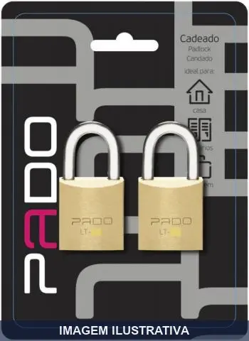
CADEADO SEGREDO IGUAL02 PADO
Indicação de Uso: Portões, armários, caixas de ferramentas e aplicações gerais. Material e Resistência: Corpo em latão maciço com haste em aço cementado. Conteúdo: 2 cadeados e 4 chaves com segredo único.

CADEADO SEGREDRO IGUAL PADO
Indicação de Uso: Proteção de portões, armários, caixas de ferramentas e outros equipamentos. Material e Resistência: Corpo em latão maciço, haste em aço, com acabamento anticorrosivo e resistência ao desgaste e intempéries. Vantagem Prática: Sistema de segredo igual permite usar uma única chave para múltiplos cadeados.
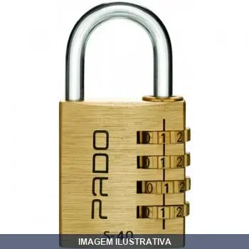
CADEADO SM SEGREDO PADO
Cadeado com sistema de segredo, indicado para proteção de malas, mochilas, armários e outros pertences. Mecanismo de combinação numérica que dispensa o uso de chave. Material em metal, apropriado para uso geral em ambiente interno e externo.
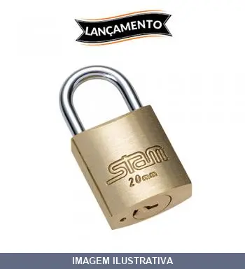
CADEADO STAM 20MM [001122]
Indicação de Uso: Fechamento e proteção de portões, cadeados, malas e objetos diversos. Material e Resistência: Construído em metal, oferece resistência adequada para uso geral em ambientes internos e externos. Vantagem Prática: Proporciona segurança prática para aplicações cotidianas de trancamento.
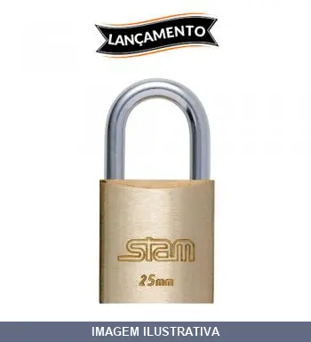
CADEADO STAM 25MM [002739]
Indicação de Uso: Fechamento e proteção de portas, portões, cadeados, malas e outros objetos que necessitem segurança contra abertura não autorizada. Material e Resistência: Construído em metal, oferece resistência adequada para uso geral em ambientes internos e externos. Vantagem Prática: Fechamento rápido e prático com chave, proporcionando segurança portátil para diversos tipos de aplicação.
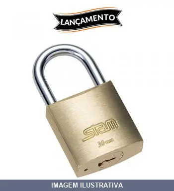
CADEADO STAM 30MM [003077]
Indicação de Uso: Cadeado destinado a proteção e fechamento de portões, grades, correntes e objetos que requeiram segurança contra abertura não autorizada. Material e Resistência: Construído em metal, oferece resistência estrutural apropriada para uso externo e interno. Vantagem Prática: Permite fechamento seguro e rápido de acessos diversos.
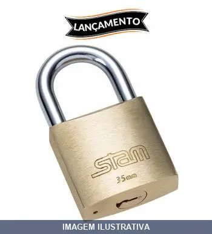
CADEADO STAM 35MM [005318]
Indicação de Uso: Cadeado destinado a fechadura de portas, portões, caixas, malas e outros objetos que necessitem segurança. Material e Resistência: Construído em metal, oferece resistência adequada para proteção contra abertura não autorizada. Vantagem Prática: Fechamento seguro e portátil, ideal para uso residencial, comercial e industrial.
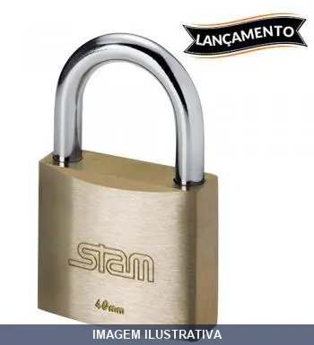
CADEADO STAM 40MM [003172]
Indicação de Uso: Fechamento e proteção de portas, portões, cadeados, malas e outros objetos que exijam segurança contra abertura não autorizada. Material e Resistência: Construído em metal, oferece resistência adequada para uso geral em ambientes internos e externos. Vantagem Prática: Proporciona fechamento seguro e portátil, sendo fácil de transportar e aplicar em diversos pontos de fixação.
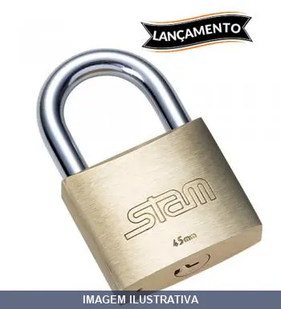
CADEADO STAM 45MM [003173]
Cadeado com corpo de latão, indicado para proteção de portões, armários e outros pontos de segurança. Oferece fechamento confiável para ambientes internos e externos. Sua estrutura em latão garante resistência ao uso contínuo.
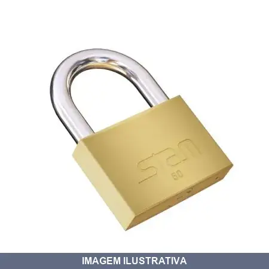
CADEADO STAM 50MM [010063]
Indicação de Uso: Cadeado indicado para fechamento de portões, portas, caixas e outros elementos que necessitem segurança contra abertura não autorizada. Material e Resistência: Construído em metal, oferece resistência mecânica para uso geral em ambientes internos e externos. Vantagem Prática: Proporciona fechamento simples e rápido, ideal para proteção de patrimônio e controle de acesso em aplicações diversas.
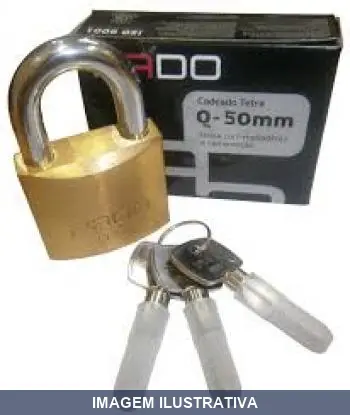
CADEADO TETRA PADO 50MM
Indicação de Uso: Fechamento de portões, cadeados, malas, mochilas e outros itens que necessitam de segurança. Material e Resistência: Construção em metal resistente. Vantagem Prática: Fechamento rápido e seguro com chave.
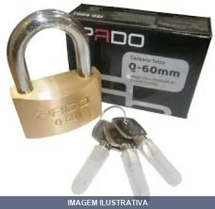
CADEADO TETRA PADO 60MM
Cadeado tetra com corpo em latão, indicado para proteção de portões, cadeados de corrente, armários e áreas externas. Mecanismo de fechadura com segredos de tetra. Aplicável em ambientes residenciais, comerciais e industriais que necessitam de fechamento seguro.

CANTONEIRA PARA MOVEIS 1 POL
Indicação de Uso: Fixação e reforço estrutural em móveis, armários e estruturas de madeira. Material e Resistência: Metálica, proporciona estabilidade angular aos móveis. Vantagem Prática: Facilita a montagem e aumenta a rigidez das estruturas.
![CANTONEIRA PARA MOVEIS 1 POL [023461]](fotos/023461.webp)
CANTONEIRA PARA MOVEIS 1 POL [023461]
Cantoneira de abas iguais em aço, formato L, medida 25x25mm, acabamento dourado. Indicada para união de chapas de madeira e reforço de prateleiras internas em móveis, aumentando a capacidade de peso. Material aço com resistência estrutural.
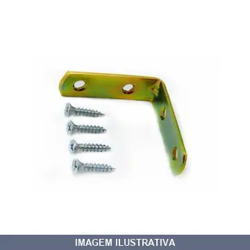
CANTONEIRA PARA MOVEIS 1.1/2
Indicação de Uso: Cantoneira para proteção e reforço estrutural de móveis e estruturas de madeira. Material e Resistência: Construída em metal, oferece resistência mecânica para fixação e estabilização de peças. Vantagem Prática: Facilita a montagem e o acabamento de móveis, proporcionando união firme entre superfícies.
![CANTONEIRA PARA MOVEIS 1.1/2 [023462]](fotos/023462.webp)
CANTONEIRA PARA MOVEIS 1.1/2 [023462]
Cantoneira abas iguais tipo L em aço, medida 40x40mm, acabamento dourado. Utilizada para união de chapas de madeira e reforço de prateleiras internas de móveis, aumentando a capacidade de peso. Marca Zamar.

CANTONEIRA PARA MOVEIS 2 POL
Indicação de Uso: Acabamento e reforço estrutural em móveis e estruturas de madeira. Material e Resistência: Fabricada em metal, oferece resistência e durabilidade para aplicações em móveis. Vantagem Prática: Facilita a montagem e o acabamento de estruturas, proporcionando alinhamento e estabilidade nas junções.
![CANTONEIRA PARA MOVEIS 2 POL [020835]](fotos/020835.webp)
CANTONEIRA PARA MOVEIS 2 POL [020835]
CANTONEIRA ZAMAR BICROM. 2'' MOVEIS PACOTE COM 50 PEÇAS
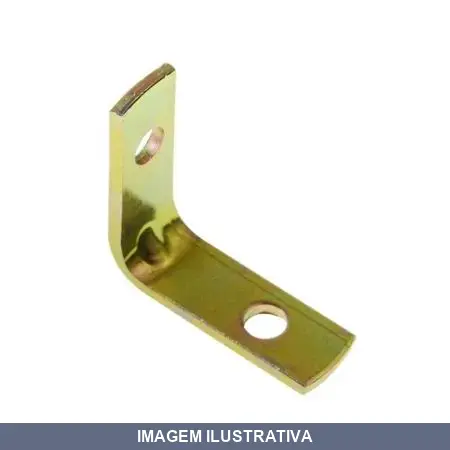
CANTONEIRA PARA MOVEIS 25X25MM
Indicação de Uso: Reforço e acabamento de cantos em móveis e estruturas de madeira. Material e Resistência: Fabricado em metal zincado, oferece resistência adequada para aplicações em móveis. Vantagem Prática: Protege as arestas de móveis contra impactos e desgaste, facilitando montagem e acabamento.
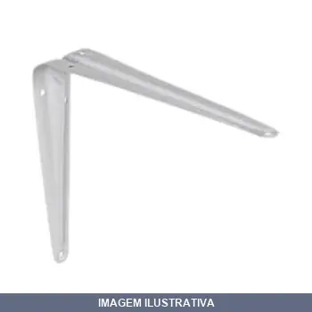
CANTONEIRA PINTADA AXION
Indicação de Uso: Suporte (cantoneira) para fixação e sustentação de prateleiras em paredes. Material e Resistência: Aço com pintura de proteção. Vantagem Prática: Acabamento pintado elimina necessidade de pintura posterior.

CANTONEIRA POP BRANCA HAYNER
Indicação de Uso: Suporte para fixação e sustentação de prateleiras. Material e Resistência: Metal resistente, cor branca. Vantagem Prática: Fácil instalação e boa sustentação de peso.
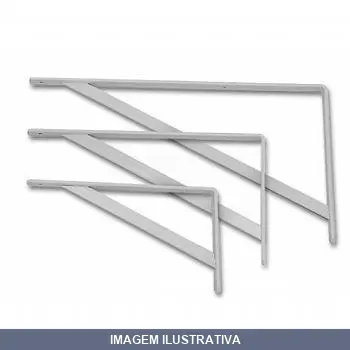
CANTONEIRA SUPER REFORCADA PRESTO/WTEC
Indicação de Uso: Suporte triangular reforçado para fixação e sustentação de prateleiras em paredes. Material e Resistência: Suporte super reforçado com alta resistência a impactos e deformações. Vantagem Prática: Sustenta prateleiras com firmeza, garantindo durabilidade e acabamento profissional em construções e reformas.
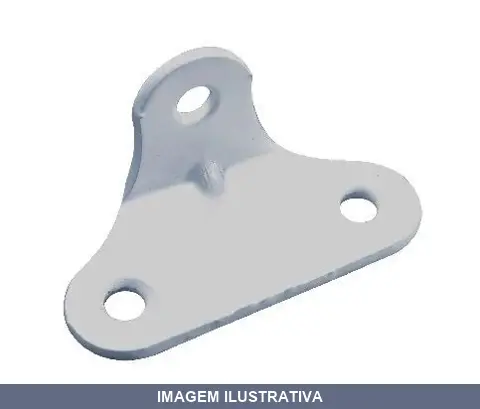
CANTONEIRA TRIANGULO
Indicação de Uso: Reforço e travamento de estruturas, esquadrias, móveis e construções em geral. Material e Resistência: Cantoneira em formato triangular plano, estrutura rígida para fixação e suporte. Vantagem Prática: Oferece três pontos de apoio para distribuição de esforços, proporcionando estabilidade em aplicações de reforço estrutural.
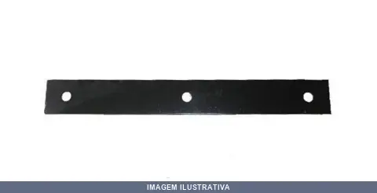
CHAPA EMENDA FERRAR
Indicação de Uso: Para emenda de vigotas, caibros e treliças de madeira, assim como travar madeiramento de telhados. Material e Resistência: Aço galvanizado, espessura 3/16 mm. Vantagem Prática: Facilita e agiliza a união de duas peças de madeira.
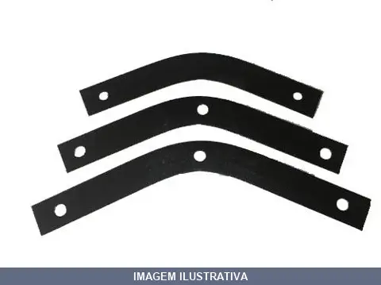
CHAPA MEIA LUA PARA TES
Chapa meia lua para tê, peça curva de reforço metálico, na cor preta, com furos para fixação por parafuso. Proporciona reforço estrutural em cantos e ligações angulares. Instalação simples através dos furos já existentes na peça.

CILINDRO FECHADURA AROUCA / /012
Cilindro de fechadura para portas e móveis. Indicação de Uso: fechaduras residenciais e comerciais. Vantagem Prática: proporciona segurança e controle de acesso com sistema de chaves.
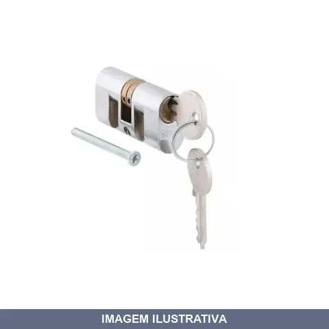
CILINDRO FECHADURA BRASIL ZAMAC
Indicação de Uso: Peça de reposição para fechaduras de embutir em portas de madeira com abertura de 2,5cm a 4cm de espessura. Material e Resistência: Fabricado em zamac com acabamento cromado, garantindo resistência à corrosão e durabilidade. Vantagem Prática: Instalação simples, acompanha parafusos. Compatible com a maioria das fechaduras Brasil do mercado.

CILINDRO FECHADURA C400 ALIANCA
Cilindro de reposição para fechaduras da linha C400. Fabricado em Zamac com pinos de latão. Indicado para fechaduras de embutir de portas de abrir e correr. Acabamento cromado. Inclui chaves e parafuso de fixação.
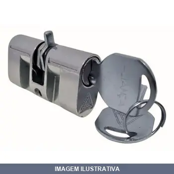
CILINDRO FECHADURA C700 ALIANCA
Cilindro para reposição de fechadura C700 Aliança. Acabamento cromado, com duas chaves incluídas. Indicado para fechaduras de embutir da marca Aliança.
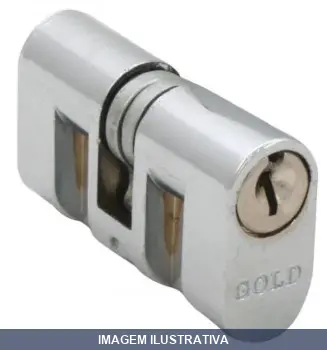
CILINDRO FECHADURA HAGA PILLER
CILINDRO HAGA 1035 (381) MONOBLOCO Em zamac Chave yale Acabamento cromado
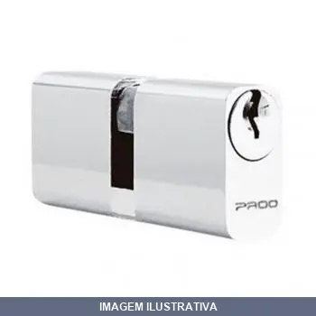
CILINDRO FECHADURA PADO ZAMAC
Cilindro para fechadura em zamac cromado, acompanha 02 chaves. Aplicável em portas de até 40 mm. Utilizado como componente em fechaduras tipo pado 725. Resistente e durável, oferece segurança e facilidade de instalação em móveis, armários e portas.
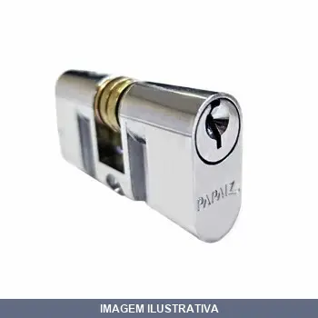
CILINDRO FECHADURA PAPAIZ ZAMAC
Cilindro para fechadura Papaiz fabricado em zamac com acabamento cromado. Componente de reposição projetado para garantir a segurança e funcionamento das fechaduras Papaiz. Acompanha duas chaves para maior comodidade. Material resistente oferece durabilidade.

CILINDRO FECHADURA SILVANA
Cilindro de fechadura Silvana em zamac com acabamento niquelado. Indicado para portas de entrada externas e internas. Material em zamac oferece resistência à corrosão. Acompanha parafuso de fixação e 2 chaves.
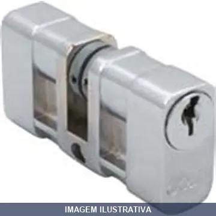
CILINDRO FECHADURA SOPRANO / ZAMAC
Cilindro para fechadura em zinco fundido com acabamento cromado. Material resistente e durável. Compatível com fechaduras externas Soprano. Inclui 2 chaves e parafuso para instalação.

CILINDRO FECHADURA STAM BIPARTIDA GOLD
Cilindro bipartido para fechadura Stam, confeccionado em metal com sistema de segredo de pinos de latão. Acompanha 2 chaves e parafuso para instalação. Indicado para reposição em fechaduras Stam das linhas residenciais.
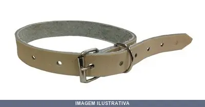
COLEIRA COURO SOCOL
Indicação de Uso: Coleira de couro com fivela metálica, ajustável por meio de furos, indicada para uso em animais ou amarração simples. Material e Resistência: Confeccionada em couro, oferece resistência e durabilidade para aplicações que requerem fixação segura. Vantagem Prática: Permite ajuste e fixação com praticidade, evitando desconforto e facilitando o uso diário.
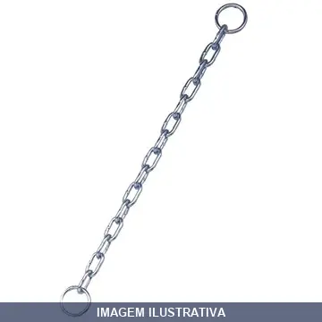
CORRENTE PARA CADEADO SAO RAPHAEL
Indicação de Uso: Corrente para cadeado destinada a reforçar a segurança de portões, janelas, grades e outros objetos. Pode ser usada para arraste ou amarração. Material e Resistência: Fabricada em aço com proteção de zinco (ou bicromatizado, conforme especificação). Elos soldados e calibrados para garantir precisão nas dimensões e resistência em trabalho. Vantagem Prática: Pronta para usar com cadeado, oferecendo segurança e resistência para proteção de bicicletas, motos e bens diversos.
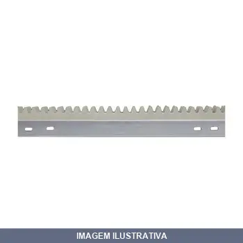
CREMALHEIRA AÇO ZINCADO PARA RESIDENCIA SLIDER
Indicação de Uso: Cremalheira para portas e portões residenciais, utilizada em sistemas de abertura e fechamento com trilho. Material e Resistência: Fabricada em aço zincado, oferecendo proteção contra corrosão. Vantagem Prática: Compatível com slider para facilitar o deslizamento e operação da estrutura.
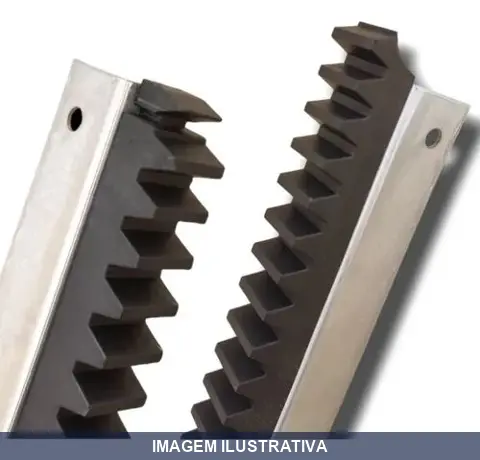
CREMALHEIRA LIGHT
Cremalheira para portão deslizante, indicada para motores residenciais. Gomo em polipropileno e cantoneira em aço galvanizado. Compatível com motores das marcas Garen, Seg, MC Garcia e Unisystem.
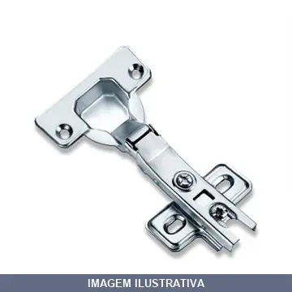
DOBRADICA ARMARIOS/MOVEIS PRESSAO GDE ALBRAS
Dobradiça de pressão reta para fixação de portas em armários e gabinetes. Material metálico com acabamento zincado que protege contra corrosão. Sistema de pressão facilita instalação e ajuste sem necessidade de ferramentas complexas.
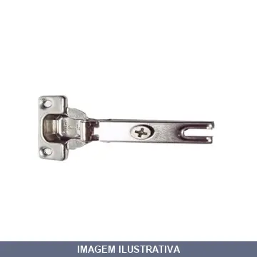
DOBRADICA ARMARIOS/MOVEIS PRESSAO PEQ ALBRAS
Dobradiça para armários e móveis de pressão, tamanho pequeno. Indicada para portas de armários, móveis e gabinetes que requerem fechamento controlado. Material metálico resistente com sistema de pressão integrado para reduzir impacto ao fechar. Vantagem prática: mantém a porta aberta em posições intermediárias e amortece o fechamento.
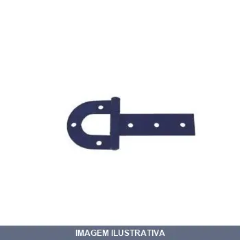
DOBRADICA FERRADURA PORTEIRA N01 SAO ROMAO
DOBRADIÇA PARA PORTEIRA TIPO FERRADURA 3,0MM NUMERO 01 REF: 31601
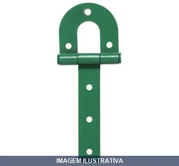
DOBRADICA FERRADURA PORTEIRA N02 SAO ROMAO
COD ANTERIOR REF 51602 DOBRADIÇA TIPO FERRADURA PARA PORTEIRA 3,0MM NUMERO 02 REF 31602
DOBRADICA FERRADURA PORTEIRA N03 SAO ROMAO
DOBRADIÇATIPO FERRADURA PARA PORTEIRA 3,0MM Nº03 REF 31603 15361 COD ANTERIOR NEGRAO: DOBRADIÇA PORTEIRA NR 3 TIPO FERRADURA - SAO ROMÃO COD 63690
DOBRADICA FERRADURA PORTEIRA N06 SAO ROMAO
Dobradiça tipo ferradura de porteira. Fabricada em aço carbono com estrutura reforçada e pintura protetiva epóxi, oferecendo grande durabilidade. Indicada para montagem em porteiras, portões e portas. Prática e fácil de instalar.
DOBRADICA LISA LEME LOTH
DESCRIÇÃO COFEMA: DOBRADIÇA LEME ZINCADA LOTH 04'' PC404 DESCRIÇÃO ROCHA: DOB. PORTAO TIPO LEME FG04 COD: C2000FG 04
DOBRADICA REFORCADA GONZO
Indicação de Uso: Dobradiça cilíndrica para confecção de portas e portões de ferro em aplicações residenciais, comerciais e industriais. Utilizada por serralheiros em geral. Material e Resistência: Fabricada em aço carbono, com acabamento bicromatizado ou polido, que proporciona resistência à corrosão e oxidação. Composta de duas partes independentes que se conectam permitindo movimento de giro suave e preciso. Vantagem Prática: Design com ou sem abas facilita a instalação e soldagem. Permite
DOBRADICA SILVANA
DOBRADIÇA SILVANA FERRO POLIDO 1.1/2'' 850 DESCRIÇÃO ROCHA: DOB P/ PORTA FG 1.1/2 COD: C1201FG 1.1/2
DOBRADICA VAI-VEM PRETA PR KALA
Dobradiça vai-e-vem para portas. Tipo pivô que permite abertura nos dois sentidos. Acabamento em cor preta. Indicada para portas de passagem e acesso. Material resistente adequado para uso residencial e comercial.
DOBRADICA ZINCADA ENCAR
DOBRADIÇA SILVANA 850 ZINCADA 2'' BLITS COM 3 PEÇAS
ESCAPULA 06P SFOR
Escápula de fixação para uso em estruturas e construções. Componente metálico destinado a conectar e reforçar emendas em elementos estruturais. Aplicação em montagens que requerem união e estabilidade de peças.
ESCAPULA 25P SOPREGO
Escápula com rosca para fixação por rosqueamento em madeira. Componente metálico utilizado em trabalhos de construção, marcenaria e instalações gerais. Aplicação em estruturas de madeira e alvenaria para ancoragem e suporte de elementos construtivos.
ESTRIBO PARA TESOURA X METALPAR
Estribo para tesoura em metal, componente de fixação e reforço estrutural. Utilizado para prender e estabilizar tesouras de telhado, contribuindo na distribuição de cargas e na estabilidade da estrutura. Material metálico garante resistência e durabilidade na construção civil.
FECHADURA BANHEIRO SOPRANO
Fechadura para banheiro com acabamento cromado, em zamac e aço inox. Aplicação em portas de tráfego leve com espessura de 26 a 39 mm. Inclui maçanetas, espelho, testa e contra testa. Produzida conforme NBR 14913. Garantia de 5 anos para funcionamento e 1 ano para acabamento.
FECHADURA ELETRICA CILINDRO FIXO INTELBRAS
Fechadura elétrica com cilindro fixo para controle de acesso. Indicação de Uso: instalação em portas de segurança, áreas restritas e sistemas de controle de entrada. Vantagem Prática: acionamento eletrônico integrado ao cilindro, facilita automação de acesso e compatibilidade com sistemas de segurança.
FECHADURA EXTERNA - STAM
Indicação de Uso: Fechadura para instalações externas em portas. Material e Resistência: Fabricada em aço inox, latão e plástico de engenharia, oferece resistência à corrosão e durabilidade. Vantagem Prática: Sistema de bloqueio eficiente com maçaneta gorje, acompanha 2 chaves para prática diária.
FECHADURA EXTERNA 1201
Indicação de Uso: Portas externas de madeira com espessura de 25 a 30 mm. Material e Resistência: Espelho em aço inox, maçanetas, trinco e lingueta em zamac, testa e contra em aço carbono. Cilindro padrão de 48 mm com chaves de latão. Acabamento cromado. Vantagem Prática: Sistema de alavanca com distância de broca de 40 mm. Fabricada pela Silvana (Assa Abloy Brasil).
FECHADURA EXTERNA 2600/41
FECHADURA ALIANÇA 2600/41 INOX EXTERNA ANTIGA DESCRIÇÃO:FECHADURA ALIANCA 2400 IP EXTERNA ESTREITA COD ANTIGO: 2400 IP PODE SER ESTREITA OU NAO.
FECHADURA EXTERNA 3001/711
Fechadura externa tipo popline com broca 40x53 e espelho E26. Acabamento cromado e chapa testa reta. Retrátil para aplicação em portas externas, portões e esquadrias. Cilindro PY 45 mm. Produzida conforme Norma Brasileira NBR 14913. Inclui maçaneta e 2 chaves. Grau de resistência a corrosão nível 2. Garantia de 5 anos para defeitos de funcionamento.
FECHADURA EXTERNA 401E PADO
Fechadura externa da linha Concept, modelo 401E, marca Pado. Indicação de Uso: Porta de entrada externa. Material e Resistência: Maçaneta e cilindro em Zamac; roseta, testa e contra testa em aço inoxidável; acabamento cromado. Acompanha 2 chaves Yale. Garantia de 11 anos para funcionamento e 2 anos para acabamento.
FECHADURA EXTERNA EST - PORTA FER STAM 501 502/03 27MM
Fechadura externa com alavanca para portas de ferro. Fabricada em material inoxidável com resistência à corrosão. Conta com espelho retangular e acabamento inox. Acompanha duas chaves.
FECHADURA EXTERNA EST - PORTA FER STAM 601 602/03 20MM
Fechadura externa para portas de ferro. Indicação de Uso: instalação em portas e portões de ferro. Material e Resistência: corpo em inox, resistente à corrosão. Vantagem Prática: fechadura de encaixe com cilindro de segurança, adequada para ambientes externos.
FECHADURA EXTERNA EST 03001. . SOPRANO
FECHADURA POPLINE SLIM EXTERNA 20 X 53 POPLINE-2053-PY-E15 Fechaduras Linha Perfil Metálico Pop Line | Estreita Características: -Broca 20x53 Modelo Cilindro: PY-ZA-LT
FECHADURA EXTERNA EST 120940 AROUCA
FECHADURA AROUCA 120940 EXTERNA ESTREITA consta uma com a referencia 120926

FECHADURA EXTERNA EST ALIANCA
Fechadura externa para portas de abrir com perfil estreito. Feita em material zamac com acabamento inox polido. Instalação por embutimento com broca de 22mm e capacidade para portas de até 2,2cm de espessura. Inclui duas chaves e maçaneta alavanca. Trinco inteiro com acionamento unidirecional e direção direita/esquerda.
FECHADURA EXTERNA PORTA CORRER STAM
FECHADURA EXTERNA PARA PORTA DE CORRER CONHECIDA COMO BICO DE PAPAGUAIO
FECHADURA GAVETA CR EMBUTIR
Fechadura cilíndrica de canhão para gaveta com acabamento cromado. Sistema de travamento seguro com cilindro e pino. Acompanha 2 chaves. Indicada para móveis, gavetas e armários de madeira.
FECHADURA LAT.TETRA FF.PAR PARA PORTA DE EMROLAR EIXO RED
Fechadura lateral tetra para porta de enrolar com eixo reduzido. Indicada para sistemas de portas metálicas enrolláveis. Fornecida em par, pronta para instalação em portas com esse tipo de mecanismo. Material em metal para durabilidade em ambientes de uso industrial e comercial.
FECHADURA SERR SOB PARA PORTAO EP PADO
FECH SOBR SERR AÇO ZAMAC 525/80 EP FECHADURA SOBREPOR P/PORTÃO 525/80 EP ZAMAC PADO Puxador, trinco e lingueta em zamac; caixa tampa e contra tampa testa em aço carbono; cilindro em zamac - Medidas: 100mm x 80mm - Acabamento: Preto
FECHADURA SERR SOB PARA PORTAO PRATICE PY SOPRANO
Fechadura para portão tipo serralha com sobrepor. Indicada para fechamento de portões e portarias. Construída com componentes metálicos. Facilita o acesso controlado a áreas com portão.
FECHADURA SERR SOB PARA PORTAO STAM
Fechadura para portão tipo sobrepor com mecanismo de serrilha. Indicação de Uso: Fechamento de portões e portais residenciais e comerciais. Material e Resistência: Corpo em aço estampado com acabamento preto, cilindro cromado, mecanismo interno resistente. Vantagem Prática: Instalação simples por sobrepor, compatível com cadeados padrão.
FECHADURA TUBULAR 4149N CR LOCKWELL
Indicação de Uso: Fechadura tubular para divisórias, portas e aberturas, com botão de girar e chave. Recomendada para uso externo em escritórios, consultórios, hotéis e flats. Material e Resistência: Acabamento cromado, estrutura em ABS, latão, zamac e aço com 2 chaves fornecidas. Vantagem Prática: Sistema tubular que reduz 50% o tempo de instalação e elimina a necessidade de ferramentas especiais. Fechadura de embutir com maçaneta e parafusos inclusos.
FECHADURA TUBULAR FT 050001 CR GOLD
Fechadura tubular em acabamento cromado dourado. Indicada para portas e móveis que utilizam cilindro tubular. Material resistente à corrosão. Proporciona segurança e fechamento de acesso.
FECHADURA TUBULAR PARA DIVISORIA 90MM INOX SOPRANO
FECHADURA CILINDRICA PRATICE TULIPA 90MM CROMADA COD: 03009.0018.01 (COD ANTIGO E FORA DE LINHA) FOI SUBSTITUIDO POR 03009.0355.01 COD: 03009.0355.01 (COD ANTIGO E FORA DE LINHA) FOI SUBSTITUIDO POR 03009.0355.91
FECHADURA TUBULAR TF PR GOLD
Fechadura tubular para portas e móveis. Construída em material resistente com acabamento preto. Oferece segurança para ambientes residenciais e comerciais com sistema de trancamento por cilindro tubular.

FECHO AUTOMATICO CEM FERROLHO GONZO
Indicação de Uso: Trancamento manual de portas em ambientes residenciais e comerciais, oferecendo controle de acesso mediante ferrolho. Material e Resistência: Construção em metal com mecanismo de ferrolho resistente. Vantagem Prática: Fornece segurança através de fechamento e travamento mecânico controlado pelo usuário.
FECHO AUTOMATICO SEM FERROLHO GONZO
Indicação de Uso: Fechamento automático de portas em residências, comércios e indústrias. Material e Resistência: Construção em metal, destinada a suportar ciclos repetidos de abertura e fechamento. Vantagem Prática: Sem necessidade de ferrolho, o fecho retorna automaticamente à posição fechada.
FECHO PARA MOVEIS ROLETE SOPRANO
Indicação de Uso: Fechamento e travamento de portas de armários e móveis em geral. Material e Resistência: Corpo fabricado em aço; rolete fabricado em nylon. Vantagem Prática: Proporciona travamento através de pressão, simples de usar.
FECHO RAPIDO COM PORTA CADEADO FA3/E1 PEQUENO GARCIA
Dispositivo de segurança e fechamento rápido com porta cadeado, fabricado em aço carbono com acabamento zincado. Mecanismo que permite travar ou destravar facilmente sem necessidade de chaves ou ferramentas especiais. Compartimento especialmente projetado para instalação de cadeado. Indicado para portões, portas de acesso, caixas e armários. Resistente à corrosão.
FECHO RAPIDO COM PORTA CADEADO FB3/E2 MEDIO GARCIA
FECHO RAPIDO GARCIA COM PORTA CADEADO REF: FB3/E2 MED
FECHO RAPIDO COM PORTA CADEADO FD3/E6 GRANDE GARCIA
Indicação de Uso: Fixação e fechamento seguro de caixas, portas, compartimentos, mochilas e equipamentos diversos. Material e Resistência: Fabricado em aço carbono 1008 com acabamento em zinco branco, resistente e durável, protegido contra corrosão. Vantagem Prática: Acionamento rápido por trava com mola acoplada, permite articulação suave de abrir e fechar, inclui porta cadeado para maior segurança.
FECHO RAPIDO FA/E1 PEQUENO GARCIA
Indicação de Uso: Fixação de tampas de baús, maletas e cases. Material e Resistência: Aço carbono 1008 com acabamento em zinco eletrolítico branco. Força de retenção de 90kg. Vantagem Prática: Fecho de engate rápido com acionamento por pressão, instalação simples e prática.
FECHO RAPIDO FB/E2 MEDIO GARCIA
Indicação de Uso: Fixação e fechamento rápido de caixas, portas, compartimentos e equipamentos em aplicações domésticas, industriais e automotivas. Material e Resistência: Fabricado em aço carbono 1008 com acabamento em zinco branco, resistente à corrosão e durável. Vantagem Prática: Acionado por trava com mola acoplada em suporte com rebite, permite articulação rápida de abertura e fechamento.
FECHO RAPIDO FD1/E6 GRANDE GARCIA
Fecho rápido grande para fixação e travamento de portas, tampas, painéis e compartimentos em geral. Fabricado em metal, oferece fechamento prático e seguro sem necessidade de ferramentas adicionais. Indicado para aplicações em máquinas, equipamentos, caixas de ferramentas e instalações que demandem acesso frequente.
FIXADOR DE COR RETO FERRAR
Indicação de Uso: Fixação e aperto de componentes em aplicações hidráulicas e pneumáticas. Material e Resistência: Construção em metal com rosca, formato em gancho (olhal) para fixação de cabos ou suportes. Vantagem Prática: Conexão simples e direta sem necessidade de adaptadores adicionais.
FIXADOR MAGNETICO PARA PORTA ZINCO INOX PRETO PLUS LOTUS
Fixador magnético para porta em zinco inox preto. Funciona com um ímã fixador no produto e uma chapa de metal aplicada na porta. Mantém a porta aberta e resiste às correntes de vento, protegendo a porta, maçaneta e revestimento da parede. Inclui peças de fixação.
FIXADOR PORTA PISO SOPRANO
SOPRANO: TRAVA PORTA PISO METALICO CROMADO COD: 03005.0068.01 FIXADOR PORTA SOPRANO PISO NIQUELADO / 068
GANCHO REDE CHUMBAR SILVANA
Par de ganchos para chumbar rede, fabricado em aço carbono com acabamento zincado. Indicado para fixação em paredes de alvenaria e concreto. Resistente à corrosão e com capacidade de suporte de 360 kg.
GANCHO REDE PARAFUSAR SILVANA
Gancho/armador de rede parafusar desenvolvido para fixação em madeira. Fabricado em aço carbono com acabamento zincado. Suporta carga máxima de até 150 kg. Gancho fixo com fácil instalação em áreas de lazer.
GANCHO REDE TIPO BATOM CROMATIZADO METALVI
Armador de rede tipo batom cromatizado. Construído em metal com acabamento cromatizado, fornecido em par. Indicado para instalação de redes de descanso em residências e ambientes diversos.
GANCHO REDE TIPO BATOM NIQUELADO METALVI
GANCHO REDE BATOM NIQUELADO PAR - METALVI Tubo de aço redondo 7/8, miolo de aço redondo 3/4 e Gancho de aço redondo3/8 DESCRIÇÃO MATERIAL: Tubo de aço redondo 7/8, miolo de aço redondo 3/4 e Gancho de aço redondo3/8 ACABAMENTO: Niquelado DETALHE: Um anel de plastico preto frisado e uma tampa de plastico preto. Miolo é retratil. CAPACIDADE: 450 KG EMBALAGEM: Caixa com 1 par UTILIZAÇÃO: Gancho para atar rede.
GONZO COM ABA E CHUMBADOR GONZO
Indicação de Uso: Fixação em alvenaria, concreto e superfícies similares. Material e Resistência: Construído em metal com chumbador integrado para ancoragem. Vantagem Prática: A aba facilita o posicionamento e alinhamento durante a instalação.
GONZO COM ABA RETA GONZO
Gonzo com aba reta, utilizado como dobradiça para fixação de portas, portões e tampas em estruturas metálicas ou de madeira. A aba reta facilita o encaixe e o alinhamento em furos pré-existentes. Componente versátil para montagem e sustentação de peças articuladas em diversos ambientes.
GONZO NAO PASSANTE GONZO
Indicação de Uso: Dobradiça para instalação em portas, portões e janelas. Material e Resistência: Fabricado em aço carbono trefilado. Vantagem Prática: Sistema não passante impede a remoção da porta ou portão quando fechado, conferindo maior segurança.
MACANETA ALAVANCA CROMADA
MAÇANETA POPLINE RETA 58MM CROMADA EC DESCRIÇÃO DA STAM: MAÇANETA 03 CROMADO
MACANETA BOLA CROMADA SOPRANO
Macaneta bola cromada para portas e móveis. Indicação de Uso: instalação em portas internas, externas e móveis em geral. Material e Resistência: acabamento cromado com resistência à corrosão. Vantagem Prática: design arredondado ergonômico, fácil manipulação e limpeza.
![MOLA AEREA PRATA F. SOPRANO 2 45 KG [001733]](fotos/001733.webp)
MOLA AEREA PRATA F. SOPRANO 2 45 KG [001733]
MOLA AEREA 302 FORÇA 2 PRATA As molas aéreas da Soprano nos modelos A530 e A300, são as únicas do mercado que possuem braço com dois fusos, que facilita sua regulagem sem removê-la da porta. O sistema permite ao instalador regular a pré-carga de força para fechamento sem a necessidade da retirada do braço que já está instalado. Características: Mola Aérea Série A300 -Versão Força 2 Prata: Cód.14020.0302.32 -Para portas de aproximadamente 900x2100 e peso de 45kg - Regulagem de fechamento de 90º
MOLA AEREA PRATA F. SOPRANO 3 65 KG [005777]
Mola aérea de força 3 com capacidade de 65 kg, acabamento prata. Indicação de Uso: fechamento automático e regulagem de portas. Material e Resistência: construção com braço duplo fusível, suporta carga de 65 kg. Vantagem Prática: permite regulagem da pré-carga sem remoção da mola da porta, facilitando instalação e manutenção.
MOLA AEREA PRATA F. VONDER 2 45 KG [024488]
Fechador hidráulico para portas com mecanismo de amortecimento. Proporciona fechamento controlado e suave. Instalação versátil em portas que abrem para ambos os lados, com amplitude de abertura de 0° a 150°. Acompanha parafusos e manual de instalação.
![MOLA AEREA PRATA F. VONDER 3 65 KG [024489]](fotos/024489.webp)
MOLA AEREA PRATA F. VONDER 3 65 KG [024489]
Mola aérea na cor prata, modelo F.3 com capacidade de carga de 65 kg. Destinada ao fechamento automático e controlado de portas. Corpo em alumínio com válvulas independentes para amortecimento. Instalação em portas com abertura bidirecional até 150°. Inclui parafusos e manual de instalação.
OLHO MAGICO VONDER
Olho mágico com ângulo de visualização de 200°. Indicado para portas de madeira ou aço com espessura entre 35 mm e 50 mm. Visor cromado com acabamento resistente.
PE DE RACK PRETO BIGFER
Pé de rack na cor preta, utilizado para elevação e suporte de racks e estruturas de equipamentos. Material resistente e durável para aplicações em instalações de servidores, telecomunicações e centros de dados. Proporciona estabilidade e nivelamento da estrutura.
PEGA LADRAO CROMADO BRASFORT
Indicação de Uso: Pega ladrão cromado para travamento e segurança de portas, permitindo abertura parcial controlada por corrente. Material e Resistência: Acabamento cromado que oferece proteção contra corrosão. Vantagem Prática: Facilita a segurança de residências e estabelecimentos comerciais, permitindo verificar quem está do lado de fora antes de abrir a porta totalmente.
PEGA LADRAO DOURADO BRASFORT
Pega ladrão com acabamento dourado. Indicado para instalação em portas e janelas como dispositivo de segurança contra invasões. Material resistente com acabamento decorativo. Oferece proteção adicional impedindo a abertura não autorizada de vãos.
PISTAO PARA MOVEIS BRANCO 060N ALBRAS
Pistão a gás com força normal 60N para sustentar portas basculantes de móveis com abertura para cima. Possui engate fácil com conectores que facilitam montagem, desmontagem e manutenção. Aplicável em cozinhas, banheiros, closets e lavanderia, proporcionando abertura suave e silenciosa. Construído em aço e plástico resistente.

PISTAO PARA MOVEIS BRANCO 100N SLOW ALBRAS
Pistão a gás para portas basculantes de móveis com força de 100 Newtons. Indicação de Uso: Abertura e fechamento suaves de portas e tampas em armários, móveis e aplicações basculantes. Material e Resistência: Fabricado em aço e plástico com acabamento em haste cromada e corpo pintado. Vantagem Prática: Sistema Slow Motion integrado proporciona fechamento suave e silencioso, com engate fácil para instalação e manutenção em móveis de madeira ou alumínio.
PITAO 06P SFOR
Pitão de fixação com rosca, indicado para ancoragem e sustentação de estruturas, móveis e equipamentos. Material em aço forjado, resistente à corrosão e adequado para uso em ambientes internos e externos. Aplicação prática em montagens, instalações e travamentos de carga.
PITAO 25P JOMARCA
Pitão com rosca para fixação e ancoragem. Aplicação em construção, estruturas metálicas e madeira. Material em aço, indicado para suportar cargas e resistir a esforços de tração. Uso em obras, instalações e montagens que exigem ponto de fixação seguro.
PORTA CADEADO "= 81114 ALIANCA
Indicação de Uso: Para trancar portas, portões e armários com auxílio de cadeado, em uso geral residencial e comercial. Material e Resistência: Fabricado em aço com acabamento zincado, proporciona resistência à oxidação e durabilidade. Vantagem Prática: Acompanha guia para encaixe simples e reforçado, garantindo instalação prática e firme.
PORTA CADEADO = 81114
PORTA CADEADO ALIANÇA 2.1/2'' 63MM REF: 81114 NOTA 241307 PORTA CADEADO 2.1/2'' MOD. 300 ZINC - SILVANA
PUXADOR ALCA CROMADO 86127
Puxador de alça cromado fabricado em aço/zamac, indicado para gavetas e portas leves. Modelo delicado e versátil, oferece acabamento cromado que proporciona resistência e durabilidade. Aplicação para uso externo em móveis, armários e gavetas.
PUXADOR ALCA CROMADO JOCEC
Puxador tipo alça fabricado em aço com acabamento cromado. Indicação de Uso: Portas, gavetas, armários e móveis em geral. Material e Resistência: Aço com acabamento cromado resistente à corrosão. Vantagem Prática: Fácil limpeza e acabamento duradouro que mantém o aspecto estético.
ROLDANA CANAL V CAIXA FECHADA REBITE ROLAMENTO GONZO
Roldana com canal V, suporte fechado e rolamento em aço cromo. Fabricada em aço 1020 com acabamento zincado. Anel de proteção de aço 1020 sobreposto ao rolamento. Fixação por rebite. Indicada para portões de correr e sistemas de movimentação.
ROLDANA CANAL V COM PARAFUSO ROLAMENTO GONZO 1 2
Indicação de Uso: Roldana para sistemas de polias, puxadores e equipamentos de tração em cabos e cordas. Material e Resistência: Canal V em metal com rolamento de esferas e flanges laterais para melhor estabilidade e durabilidade. Vantagem Prática: Facilita o deslocamento de cargas e reduz esforço manual em operações de tração.

ROLDANA CANAL V COM PARAFUSO ROLAMENTO GONZO 1 2.1/2
Indicação de Uso: Roldana para sistemas de polias e transmissão de carga. Aplicável em mecanismos de elevação, puxamento e distribuição de esforço em estruturas e equipamentos. Material e Resistência: Canal tipo V com 1 rolamento que favorece movimento suave e distribuição eficiente de carga. Vantagem Prática: Parafuso integrado facilita fixação direta em estruturas. Rolamento reduz fricção e prolonga vida útil do equipamento.

ROLDANA CANAL V COM PARAFUSO ROLAMENTO GONZO 1 3
Indicação de Uso: Roldana para sistemas de polias, transmissão de carga e movimentação de cargas através de cabos ou correntes. Aplicável em portões, elevadores e estruturas de içamento. Material e Resistência: Construída com canal em formato V para encaixe seguro de cabos e correntes, dotada de 1 rolamento para redução de atrito e suavidade de movimento. Vantagem Prática: Parafuso de fixação integrado facilita instalação. Rolamento interno proporciona funcionamento mais fluido e duradouro em

ROLDANA CANAL V COM PARAFUSO ROLAMENTO GONZO 1 3.1/2
Roldana com canal em V e parafuso de fixação, equipada com 1 rolamento. Indicada para sistemas de polias e transmissão de carga em estruturas fixas. Material metálico resistente. Facilita o direcionamento e movimentação de cordas e cabos em aplicações de içamento e tração.
ROLDANA CANAL V COM PARAFUSO ROLAMENTO GONZO 1 4
Roldana com canal em V, equipada com parafuso de fixação e 1 rolamento, indicada para sistemas de polias e transmissão de carga. Material resistente adequado para aplicações em estruturas, máquinas e equipamentos que necessitam de suporte e movimentação. Facilita a passagem e deslizamento de cabos e cordas em traçados diversos.
ROLDANA CANAL V COM PINO 1 ROLAMENTO 2 GONZO
Roldana em aço com canal V e pino central, equipada com rolamento de precisão. Indicada para portões de correr e basculantes. Material em aço 1020 oferece resistência estrutural. Facilita a abertura e fechamento ao reduzir o esforço necessário. Instalação simples e compatível com diversos tipos de trilhos.

ROLDANA CANAL V COM PINO 1 ROLAMENTO 2.1/2 GONZO
Roldana em aço com canal V e pino central, equipada com rolamento de precisão. Indicada para portões de correr e basculantes. Material em aço 1020 oferece resistência estrutural. Facilita a abertura e fechamento ao reduzir o esforço necessário. Instalação simples e compatível com diversos tipos de trilhos.

ROLDANA CANAL V COM PINO 1 ROLAMENTO 3.1/2 GONZO
Roldana em aço com canal V e pino central, equipada com rolamento de precisão. Indicada para portões de correr e basculantes. Material em aço 1020 oferece resistência estrutural. Facilita a abertura e fechamento ao reduzir o esforço necessário. Instalação simples e compatível com diversos tipos de trilhos.

ROLDANA CANAL V COM PINO 1 ROLAMENTO 4 GONZO
Roldana em aço com canal V e pino central, equipada com rolamento de precisão. Indicada para portões de correr e basculantes. Material em aço 1020 oferece resistência estrutural. Facilita a abertura e fechamento ao reduzir o esforço necessário. Instalação simples e compatível com diversos tipos de trilhos.

ROLDANA CANAL V COM PINO 1 ROLAMENTO 5 GONZO
Roldana em aço com canal V e pino central, equipada com rolamento de precisão. Indicada para portões de correr e basculantes. Material em aço 1020 oferece resistência estrutural. Facilita a abertura e fechamento ao reduzir o esforço necessário. Instalação simples e compatível com diversos tipos de trilhos.

ROLDANA CANAL V COM PINO ROLAMENTO GONZO
Indicação de Uso: Roldana para portões de correr. Material e Resistência: Fabricada em aço 1020 com rolamento em aço cromo, oferecendo resistência mecânica. Possui tratamento de proteção contra oxidação. Vantagem Prática: Instalação simples e rápida no trilho tipo canal V com pino.
ROLDANA CANAL V COM SUPORTE FIX LATERAL GONZO
ROLDANA 3'' V SUPORTE PARA FIXAÇÃO LATERAL CAPACIDADE: 380 KG
ROLDANA CANAL V TIPO TRUCK GONZO
Indicação de Uso: Para movimentação de portões deslizantes e basculantes, em sistemas que requerem estabilidade e correção de desnivelamento do trilho. Material e Resistência: Fabricada em aço, com rolamentos em aço cromo. Possui caixa reforçada com eixo móvel oscilante. Vantagem Prática: Canal em forma V compatível com trilhos tipo cantoneira, ferros e tubos redondos, permitindo movimentação suave com redução de força necessária para abertura e fechamento.
ROLDANA FERRO GANCHO MINASUL
ROLDANA Nº 6 As roldanas são utilizadas, especialmente, na construção civil, agricultura e jardinagem para içamento e movimentação de cargas. BENEFÍCIOS DO PRODUTO 1. As roldanas são fabricadas em ferro fundido cinzento e com gancho de aço, garantindo qualidade e resistência ao produto; 2. Sistema de pintura por imersão, protegendo os produtos contra oxidação; 3. Capacidade de carga testada e aprovada por laboratório credenciado pelo INMETRO. Obs.: Roldana número 6 montada com parafuso.
ROLDANA PLASTICA IPCL 24X24
ROLDANA PLASTICA 24 X24 (PACOTE COM 500 PEÇAS)
ROLDANA PLASTICA IPCL 30X30
ROLDANA PLASTICA 30 X30 ( PACOTE COM 500 PEÇAS )

ROLDANA PLASTICA IPCL 36X36
ROLDANA PLASTICA 36 X 36 ( PACOTE COM 200 PEÇAS )
SAPATA PARA ROPEIRO BRANCO BIGFER
Indicação de Uso: Sapata para guarda-roupa, destinada a estabilizar e nivelar móveis. Material e Resistência: Estrutura em material resistente, acabamento branco. Vantagem Prática: Protege pisos e distribui o peso do móvel de forma uniforme.
SUPORTE ANTENA PREGAR E CHUMBAR SIMPLES HAYNER
Indicação de Uso: Instalação de tubos de antena. Material e Resistência: Metal. Vantagem Prática: Sistema pregar e chumbar, permitindo fixação em diferentes tipos de superfícies.
SUPORTE ANTENA PREGAR SIMPLES HAYNER
Indicação de Uso: Para instalação de tubos de antena. Material e Resistência: Construído em metal, resistente para suportar antenas. Vantagem Prática: Fixação por pregação, apropriado para diferentes superfícies.
SUPORTE MICRO-ONDAS BRANCO SUFORT
Suporte para micro-ondas na cor branca. Indicação de Uso: Fixação e suporte de micro-ondas em parede ou móvel de cozinha. Material e Resistência: Estrutura resistente adequada para sustentação de eletrodoméstico. Vantagem Prática: Otimiza espaço em cozinha, mantendo o aparelho seguro e acessível.
SUPORTE OU CANTONEIRA PARA PRATELEIRA ZAMAC
Cantoneira para fixação de prateleiras e móveis, fabricada em zamac. Suporta até 18 kg. Formato em L para união de peças como prateleiras, tampos, laterais e gavetas. Instalação prática com parafusos (não inclusos). Acabamento resistente e discreto.
SUPORTE PARA AR .000BTUSPAR GIROVISAO
Suporte estruturado para fixação de unidades condicionadoras split de 7 a 30.000 BTUs. Indicação de Uso: instalação e sustentação de aparelhos de ar condicionado em paredes externas ou internas. Material e Resistência: estrutura resistente com capacidade de suportar o peso especificado. Vantagem Prática: proporciona instalação segura e estável do equipamento.
SUPORTE PARA AR PRETO PAR BURDOG
Indicação de Uso: Suporte estrutural para instalação e fixação de unidades de ar condicionado em paredes externas e internas. / Material e Resistência: Construído em aço com revestimento preto, oferece resistência à corrosão e suporta o peso de equipamentos de climatização de médio porte. / Vantagem Prática: Facilita a instalação segura e estável do ar condicionado, distribuindo o peso de forma equilibrada e reduzindo esforços na estrutura da parede.
SUPORTE PARA BOMBONA DE PROTETOR SOLAR NUTRIEX
Suporte para bombona de protetor solar. Acessório de infraestrutura destinado ao armazenamento e organização de embalagens de produtos químicos em ambientes comerciais e industriais. Facilita o acesso e a movimentação segura do recipiente.
SUPORTE PARA VARAO DE CORTINA SIMPLAS BRANCO PAR CADIZ
Suporte simples para varão de cortina na cor branca. Indicado para instalação em parede ou teto, proporciona sustentação segura para cortinas. Material resistente com design discreto. Acompanha parafusos, buchas e ponteiras de acabamento.
SUPORTE PARA VASSOURA COM GANCHOS CR IGUATEMI
Indicação de Uso: Para organizar e pendurar vassouras, rodos e outros utensílios com cabo. Material e Resistência: Metal resistente com acabamento cromado, suporta até 2kg por gancho. Vantagem Prática: Dispõe de 5 ganchos para organizar múltiplos itens, ideal para áreas de serviço, cozinhas e lavanderias.
SUPORTE TUCANO REGULAVEL CROMADA MEDIO ESERO
Indicação de Uso: Suporte para fixação e sustentação de prateleiras de vidro ou madeira. Material e Resistência: Fabricado em cromado, apresenta resistência à corrosão. Vantagem Prática: Design regulável permite ajuste conforme necessidade de instalação.
SUPORTE TV ''/ '' LCD MULT.FIXO
Indicação de Uso: Fixação de televisores LCD, LED e Plasma em parede. Suporte fixo universal compatível com padrão VESA. Material e Resistência: Aço carbono com pintura epóxi de alta resistência, suporta até 100 kg. Distância da parede: 35 mm. Vantagem Prática: Instalação simples com sistema de fixação universal e ajuste fino para centralização do equipamento.
SUPORTE TV ''/ '' LCD PLUS LOTUS
Suporte fixo universal para TV de 13 a 70 polegadas. Estrutura em aço carbono com pintura epóxi. Compatível com padrão VESA. Suporta carga de até 60kg. Acompanha parafusos, buchas e arruelas para instalação.
SUPORTE TV ARTICULADO LIGA ATE GRAUS PLUS LOTUS
Suporte articulado para TV. Construído em aço carbono com pintura epóxi. Inclinação ajustável de 15 graus e giro de 90 graus. Suporta carga de até 30 kg. Padrão VESA 75x75 a 400x400 mm. Distância da parede 25 mm. Montagem simples com acessórios inclusos. Compatível com padrão VESA universal.
SUPORTE TV LCD ARTICUL
Indicação de Uso: Suporte articulado para fixação de televisores LCD em parede. / Material e Resistência: Estrutura em aço com pintura epóxi pó, resistente à corrosão. / Vantagem Prática: Design articulado permite ajuste de ângulo e inclinação para melhor visualização.
SUPORTE U PARA VIDRO RED CROMADO CRIATIVA
Indicação de Uso: Fixação de prateleiras de vidro em ambientes residenciais e comerciais. Material e Resistência: Fabricado em zamac com acabamento cromado, oferecendo resistência à corrosão e durabilidade. Vantagem Prática: Design em forma de U discreto e moderno, acompanha parafuso para instalação segura e simples das prateleiras.
TAMPA CONDULETE TOP C TOM HORIZ TIGRE
Indicação de Uso: Tampa para condulete, utilizada em instalações elétricas para fechamento e proteção de caixas de passagem. Aplicável em sistemas de canalização de fios e cabos em ambientes internos e externos. Material e Resistência: Fabricada em material resistente, adequada para proteger a caixa de condulete contra poeira, umidade e agentes externos. Vantagem Prática: Facilita a manutenção e acesso aos componentes internos da caixa de passagem, permitindo fechamento hermético quando não
TAMPA CONDULETE TOP C TOM VERT TIGRE
Tampa para condulete tipo C, na cor cinza. Indicada para proteção e vedação de conduletes em instalações elétricas. Material plástico resistente. Proporciona acabamento e segurança em pontos de conexão de canaletas e conduítes.
TAMPA PLASTICA PARA VALVULA TV02 RF
Indicação de Uso: Tampa para válvulas de pneus, vedando o acesso à válvula quando não em uso. Material e Resistência: Fabricada em plástico resistente e durável, adequada para uso em sistema pneumático.
TAMPA REDONDA EXTERNA COM UND MASTICMOL
Tampa redonda externa com rosca para encanamentos e sistemas hidráulicos. Indicação de Uso: vedação e proteção de extremidades de tubulações. Material e Resistência: plástico resistente. Vantagem Prática: impede entrada de sujeira e umidade em tubos.

TAMPA REDONDA EXTERNA MASTICMOL
Indicação de Uso: Tampa de vedação para extremidade de tubulação hidráulica ou pneumática. / Material e Resistência: Plástico resistente. / Vantagem Prática: Protege a abertura do tubo contra contaminação e vazamentos.
TAMPA REDONDA EXTERNA PVC MASTICMOL
Indicação de Uso: Tampa para tubulações e conexões de PVC, aplicação em sistemas externos. Material e Resistência: Confeccionada em PVC, material resistente à umidade e intempéries. Vantagem Prática: Protege as extremidades de tubos contra entrada de sujeira e água.
TAMPA REDONDA INTERNA GRAUS COM FURO MASTICMOL
GUARNIÇÕES PLASTICAS PARA MOVEIS 1.1/4'' INT 38 PRETA COM FURO
TAMPA REDONDA INTERNA PVC COM UND MASTICMOL
Indicação de Uso: Tampa redonda para tubulação de PVC com rosca interna, aplicada em sistemas hidráulicos e de encanamento para vedação de extremidades de tubos. Material e Resistência: Fabricada em PVC, material resistente à corrosão e adequado para fluidos comuns em instalações prediais. Vantagem Prática: Proporciona vedação segura e rápida, evitando vazamentos em pontos finais de tubulação.
TAMPA REDONDA INTERNA PVC MASTICMOL
Indicação de Uso: Acabamento e proteção de tubos redondos em estruturas metálicas, móveis, cadeiras, mesas e pés de equipamentos. Material e Resistência: Plástico PVC com aderência, maior flexibilidade e menor atrito. Encaixe de pressão na parte interna do tubo. Vantagem Prática: Protege o móvel contra riscos no piso, evita entrada de insetos e oferece proteção contra cortes em rebarbas dos tubos.
TAMPA RETANGULAR EXTERNA BOTA PRETA PARA MESA 50X30MM
PONTEIRA 50X30 BOTA PRETO GUARNIÇÕES PLASTICAS PARA MOVEIS 50X30MM EXT BOTA PRETA
TAMPA RETANGULAR INTERNA PVC COM UND MASTICMOL
Indicação de Uso: Tampa para acabamento interno de canaletas e conduítes retangulares em instalações elétricas e hidráulicas. Material e Resistência: Fabricada em PVC, oferece resistência a impactos e proteção contra poeira e umidade. Vantagem Prática: Facilita o fechamento e proteção de passagens internas, proporcionando acabamento limpo em projetos de infrastructure.

TAMPA RETANGULAR INTERNA PVC MASTICMOL
Indicação de Uso: Tampa de acabamento para canaletas e dutos retangulares de PVC em instalações elétricas e hidráulicas. Material e Resistência: Fabricada em PVC, material resistente e durável. Vantagem Prática: Protege a passagem interna de fios e tubulações, vedando e finalizando a canaleta.
TRANQUETA PARA POSTIGO 86108 ALIANCA
Tranqueta zincada Aliança com base de 2 furos para travamentos em geral. Indicada para portas metálicas, portinholas e divisórias de vidro. Prática e fácil de instalar, oferece resistência à corrosão. Embalagem com 20 peças.
TRANQUETA VONDER
TRANQUETA BASE 2 FUROS NIQUELADA VONDER Indicada para travamentos em geral, muito utilizada em portas metálicas para o travamento da divisória de vidro Prática e fácil de instalar
TRAVA DE SEGURANCA FERRAR
Indicação de Uso: Dispositivo de segurança destinado a travar e imobilizar estruturas, máquinas ou equipamentos, prevenindo movimentação indesejada. Material e Resistência: Fabricado em ferro, oferecendo resistência para aplicações de fixação e travamento. Vantagem Prática: Proporciona retenção segura de componentes durante operações de manutenção, armazenamento ou transporte.
TRILHO CORTINA DUPLO
Indicação de Uso: Instalação de cortinas com forro, permitindo movimentação independente de cada tecido. Ideal para ambientes residenciais e comerciais. Material e Resistência: Alumínio natural. Fabricado com duas vias independentes para combinar voil e cortina ou criar duas quedas decorativas. Vantagem Prática: Deslizamento suave dos tecidos com maior flexibilidade no controle de iluminação e privacidade. Facilita a abertura e fechamento das cortinas de forma independente.
TRILHO CORTINA TRIPLO
Indicação de Uso: Instalação de até três cortinas em um único sistema, permitindo combinação de cortinas leves e blackout. Material e Resistência: Fabricado em alumínio, oferece resistência e durabilidade para uso em ambientes internos. Vantagem Prática: Sistema com múltiplos trilhos possibilita maior controle da luminosidade e privacidade, com deslizadores para movimento suave das cortinas.
TRINCO FIO CHATO PARA CADEADO 065XMMX INCA
Indicação de Uso: Trinco em fio chato destinado à fixação e travamento de cadeados em portas, portões, caixas e estruturas diversas. Material e Resistência: Confeccionado em fio chato, oferecendo estrutura adequada para suportar cadeados de segurança. Vantagem Prática: Solução simples e direta para instalação de sistemas de fechamento com cadeado.
TRINCO FIO CHATO PARA CADEADO 073XMMX INCA
Indicação de Uso: Utilizado em portas, portões e janelas como trinco simples para travamento com cadeado. Material e Resistência: <cite index="11-2">Aço SAE 1010 com acabamento zincado</cite>. Vantagem Prática: <cite index="18-1">Trinco simples e econômico em metal com porta cadeado</cite>.

TRINCO FIO CHATO PARA CADEADO 080XMMX INCA
Trinco chato simples e econômico em aço com acabamento galvanizado, com lingueta perfurada para instalação de cadeado. Utilizado como fechamento em portas, portões e janelas. Fixação por rebite, solda ou parafusos em ambas as partes. Resistente à corrosão.

TRINCO FIO CHATO PARA CADEADO 095XMMX INCA
Indicação de Uso: Portas, portões, janelas e armários que necessitam de sistema de fechamento com cadeado. Material e Resistência: Fabricado em aço com acabamento galvanizado, oferece resistência à corrosão. Vantagem Prática: Instalação prática com furos pré-definidos para parafusos ou fixação por rebite e solda. Compatible com cadeados padrão.

TRINCO FIO CHATO PARA CADEADO 126XMMX INCA
Indicação de Uso: Trinco de fio chato destinado a cadeados, utilizado para fixação e travamento de portas, portões, caixas e outros equipamentos que necessitem segurança. Material e Resistência: Fabricado em fio chato, oferecendo resistência apropriada para aplicações com cadeado. Vantagem Prática: Permite travamento seguro e prático de objetos e ambientes através de cadeado compatível.

TRINCO FIO CHATO PARA CADEADO 160XMMX INCA
Trinco para cadeado, acabamento zincado, indicado para portas, portões e janelas. Formato plano em aço com lingueta perfurada para instalação de cadeado. Oferece segurança e fácil instalação com parafusos, rebite ou solda.
TRINCO FIO REDONDO
Pino de fechadura tipo fio redondo para mecanismos de trancas e fechaduras. Fabricado em aço com acabamento zincado, resistente à corrosão. Componente de precisão para montagem em sistemas de fechamento de portas e janelas.
TRINCO JANELA CORRER WOLFER
Indicação de Uso: Travamento e fixação de janelas de correr. Material e Resistência: Construído em metal, oferece resistência e durabilidade para uso contínuo. Vantagem Prática: Proporciona segurança ao imobilizar a janela na posição desejada, impedindo aberturas indesejadas.
VARAO PARA CORTINA SIMPLES BRANCO COM SUPORTE 2MT CADIZ
Varão simples em aço plastificado PVC branco da marca Cadiz, acompanhado de suportes em polipropileno. Indicado para sustentação de uma única camada de cortina em ambientes residenciais. Instalação direta em parede ou teto. Suportes inclusos no kit.
VARAO PARA CORTINA SIMPLES MOGNO COM SUPORTE 2MT CADIZ
Indicação de Uso: Sustentação de cortinas simples em ambientes internos, fixado em parede ou teto. Material e Resistência: Fabricado em metal com acabamento mogno, oferece resistência adequada para cortinas de peso leve a médio. Vantagem Prática: Acompanha suportes/braços e ferragens necessárias para instalação segura e estável.